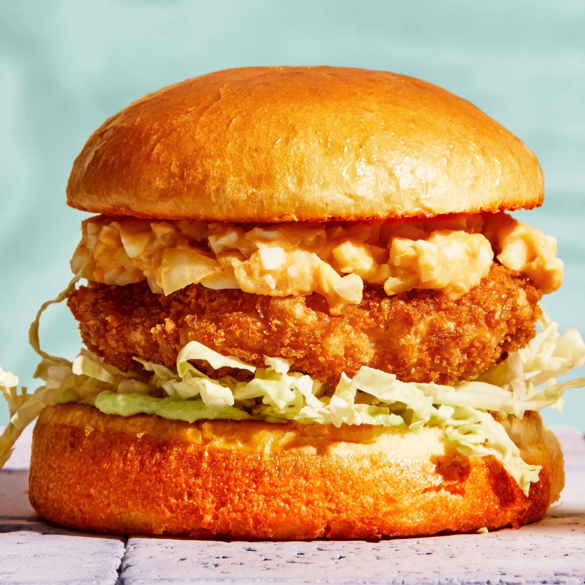

Shrimp Burgers

These delicious shrimp patties will have you forgetting about beef the next time you grill out!
Ingredients
- 4 hard-boiled eggs, coarsely chopped
- 1/4 medium onion, finely chopped
- 4 tbsp. mayonnaise (preferably kewpie)
- 2 tbsp. ketchup
- 1 tsp. Diamond Crystal, or 1/2 tsp. Morton kosher salt, divided plus more
- 12 oz. shrimp, peeled, deveined
- 2 tsp. potato starch or cornstarch
- 1/2 tsp. freshly ground black pepper
- 2 large eggs, beaten to blend, divided
- Vegetable oil for frying (about 4 cups)
- 1 cup Panko
- 1/3 cup all-purpose flour
- 2 tbsp. unsalted butter
- 4 brioche buns, split
- 4 tbsp. wasabi mayonnaise
- 1/4 medium head of savoy cabbage, cored and thinly sliced
SPECIAL EQUIPMENT: Deep-fry thermometer
Cooking Instructions
- Mix hard-boiled eggs, onion, mayonnaise, ketchup, and ½ tsp. Diamond Crystal or ¼ tsp. Morton kosher salt in a small bowl until combined. Set egg salad aside.
- Cut one third of shrimp into ½” pieces; finely chop remaining shrimp (or pulse in a food processor). Transfer all shrimp to a medium bowl. Mix in potato starch, pepper, 1 Tbsp. beaten eggs, and ½ tsp. Diamond Crystal or ¼ tsp. Morton kosher salt. Using oiled hands, divide mixture into 4 portions, then shape into ½”-thick patties. Place on an oiled baking sheet and chill 1 hour.
- Place panko, flour, and remaining beaten eggs in 3 separate shallow bowls. Working with 1 patty at a time, dredge in flour, shaking off excess. Dip in eggs, letting excess drip back into bowl, then coat in panko, pressing to adhere before shaking off excess.
- Pour oil into a large heavy skillet, preferably cast iron, to come 1” up sides. Clip thermometer to sides of pan. Heat oil over medium until thermometer registers 350°. Working in 2 batches, carefully slide patties into oil and fry, turning halfway through, until golden brown and cooked through, about 3 minutes per side. Transfer to a wire rack set inside a rimmed baking sheet; season with salt.
- Melt 1 Tbsp. butter in another large skillet over medium heat. Working in 2 batches and adding remaining 1 Tbsp. butter between batches, toast buns, cut sides down, until golden brown, about 2 minutes. Transfer to plates.
- Spread each bottom bun with 1 Tbsp. wasabi mayonnaise. Top each with some cabbage and a patty. Spoon reserved egg salad over and close burgers.
Do ahead: Egg salad can be made 1 day ahead; cover and chill. Patties can be formed 12 hours ahead; cover and keep chilled.